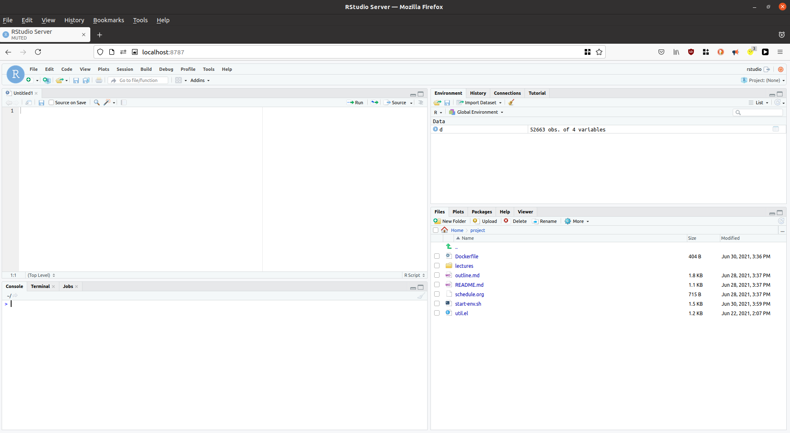
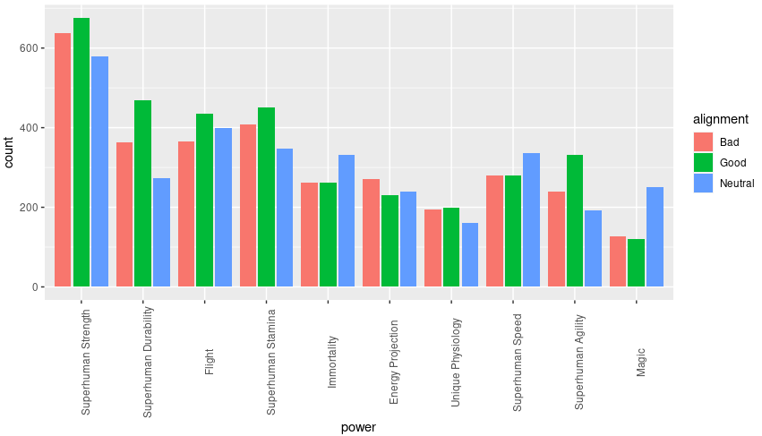
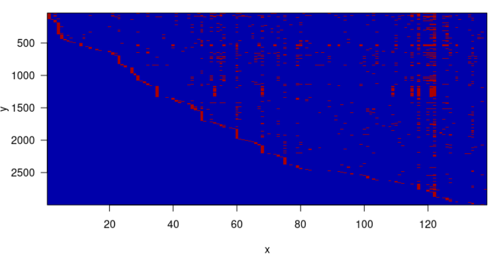
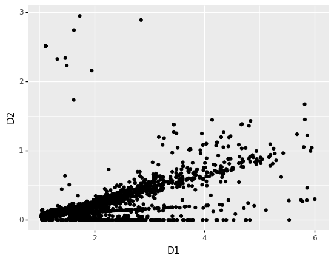

Table of Contents
1. Why Learn Docker?
Docker is a "containerization engine." The idea here is to allow the user to specify, in a simple text format, what a computer needs to do a certain job. Docker then reads that specification, builds the computer, and allows you, the user, to run it.
This was originally designed for use cases in Software Engineering. In particular, Docker let's you create "reproducible deployments." It used to be the case that software projects and the machines on which they run were configured and maintained seperately. But since how software runs often depends (in tricky ways) on the machine which runs them, such two pronged maintenance was often complicated.
Docker allows engineers to develop software and a specification for the machine on which that software should run. Docker provides a huge suite of related capabilities for this use case.
So why should a datascientist care about Docker? Because data science pipelines and programs also run in a context and you want that context to be as reproducible as any other part of your work.
1.1. The Big Idea
A good data science project should come with its own Docker file with instructions for running the code in the specified container. That way, anyone who gets their hands on your code and who also can run Docker will be almost guaranteed to be able to run it.
Even if a user doesn't have access to a machine where they can build and run Docker containers, the Dockerfile (as we shall see) is a compact description of most of what they will need to run the code.
1.2. Using Docker
Once you have installed Docker according to the provided instructions for your operating system, the first thing to do is test that it is working.
docker run hello-world
Hello from Docker!
This message shows that your installation appears to be working correctly.
To generate this message, Docker took the following steps:
1. The Docker client contacted the Docker daemon.
2. The Docker daemon pulled the "hello-world" image from the Docker Hub.
(amd64)
3. The Docker daemon created a new container from that image which runs the
executable that produces the output you are currently reading.
4. The Docker daemon streamed that output to the Docker client, which sent it
to your terminal.
To try something more ambitious, you can run an Ubuntu container with:
$ docker run -it ubuntu bash
Share images, automate workflows, and more with a free Docker ID:
https://hub.docker.com/
For more examples and ideas, visit:
https://docs.docker.com/get-started/
This will "pull" a specified Docker image and run its default command, which just prints out a message.
Almost all the Docker containers used in this book will be based on
rocker/verse. We can test that we have access to this image like so:
docker run -it rocker/verse /bin/bash
We should then expect to see a prompt like this one:
root@dff56ba76b90:
What we are seeing here is a shell running inside of a sort of virtual computer. How this machine is set up depends entirely on a specification provided by the Docker container repository for rocker/verse.
1.3. Ports, Arguments, etc
The major benefit of the Rocker family of images is that they contain an R Studio server instance pre-configured. This will allow us to have a uniform development environment anywhere we (or anyone else) can set up a Docker container.
The instructions associated with Rocker tell us to start our Docker container like this:
docker run -v $(pwd):/home/rstudio/work -e PASSWORD=yourpassword --rm -p 8787:8787 rocker/verse
Given what we learned in the unix and shell scripting chapter, we should be able to at least read this command line.
At its most basic level we are invoking the command "docker" with 7 arguments:
run\ -e\ PASSWORD=yourpassword\ --rm\ -p\ 8787:8787\ rocker/verse
It is up to the docker command to interpret these command line arguments. Let's group them up by the conventions we learned in Chapter 2.
run # this is the sub-command -e PASSWORD=yourpassword ## -e lets us set an environment variable ## in the container --rm # delete the container when we are done -p 8787:8787 ## expose port 8787 in the container ## as port 8787 on localhost rocker/verse ## the name of the docker image to run
Networking is definitely outside of the scope of this course but we do need to know a few things about it. Rstudio is a server - it waits around for HTTP requests made by a web browser. Servers listen on a "port" which we can use on a single computer to distinguish many web servers.
The access a port on your local machine you type "localhost" into
your address bar and then :port-number. So if we start rocker as
above and visit localhost:8787 we should see our rocker instance
running.
All that remains is to log in with "rstudio" and the password we provided.
1.4. Adding the Local Filesystem
In production scenarios Docker containers typically are self-contained – in our case that means that the code they are meant to run will be built into the image and executed by the Docker container's default command.
But most of what we will do here is development work, and for that we want our container to be able to access our actual filesystem, where we will be creating and editing files and figures. To accomplish this, let's modify our command line for launching the container like this:
docker run # this is the sub-command -e PASSWORD=yourpassword ## -e lets us set an environment variable ## in the container --rm # delete the container when we are done -p 8787:8787 ## expose port 8787 in the container ## as port 8787 on localhost -v $(pwd):/home/rstudio/project ## place the current working directory ## at /home/rstudio/project inside the container rocker/verse ## the name of the docker image to run
Now we just need to restart the Docker container. How do we do that?
One possibility is pressing CTRL-C at the terminal where we
started the container. This sends the "kill" signal to the
container. But you may also want or need to kill a specific
container that is running. In fact, it is possible to launch a
container in the background. Docker provides its own process
management system:
docker ps
CONTAINER ID IMAGE COMMAND CREATED STATUS PORTS NAMES 73961808710a 611-example "/init" 29 minutes ago Up 29 minutes 0.0.0.0:8787->8787/tcp, :::8787->8787/tcp brave_poitras
In the above example we see a single container running. We can kill it by saying
docker kill b7ec
Note that we only need to include enough of the container ID to identify it uniquely.
Now we can launch our machine:
docker run -e PASSWORD=yourpassword --rm -p 8787:8787 -v $(pwd):/home/rstudio/work rocker/verse

Figure 1: R studio, without the mess.
2. Taking R for a Spin
We still need to learn to modify our Docker container but rather than let our brains leak out of ears from boredome, let's do a little fake data science.
(Note, for the examples in this book, I'm mounting the entire BIOS 611 repository under project.)
Our data set is scraped (see the scraping appendix) from the DC Fandom Wiki and contains (among other things) meta-data about DC Comics Characters as well as what Superhuman powers they may have.
Let's make a figure that compares power distribution against "alignment."
library(tidyverse) d <- read_csv("./data/powers.csv") %>% filter(universe=="New Earth") %>% select(-universe, -url); alignment <- read_csv("./data/X-01-web-scraping/character-data.csv") %>% filter(universe=="New Earth" & property_name == "Alignment") %>% select(-universe, -property_name) %>% rename(alignment=value); alignment <- rbind(alignment %>% filter(alignment=="Good") %>% sample_n(1000), alignment %>% filter(alignment=="Bad") %>% sample_n(1000), alignment %>% filter(alignment=="Neutral") %>% sample_n(1000)); power_tally <- d %>% group_by(power) %>% tally() %>% arrange(desc(n)); common_powers <- d %>% filter(power %in% head(power_tally,10)[["power"]]) %>% left_join(alignment, by="character") %>% mutate(power=factor(power, power_tally[["power"]])) %>% filter(alignment %in% c("Good","Bad","Neutral")); p <- ggplot(common_powers, aes(power)) + geom_histogram(stat="count",position="dodge2",aes(fill=alignment)) + theme(axis.text.x = element_text(angle = 90)) print(p)

Figure 2: Are powers distributed differently to evil characters?
One way to answer this question is to create a boolean vector of powers for each character and try to use that input as a model that classifies a character as "good" or "evil". If we use a powerful enough model, its failure can be taken as indicating that there isn't so easy to assign an alignment based on a power distribution.
A good candidate is AdaBoost, which Wikipedia calls the "best out of the box classifier." But before we get there we have to convert our character data, which is a table like this:
| power | character | universe | url |
|---|---|---|---|
| Accelerated Healing | Abraham Dusk | Wildstorm Universe | https://dc.fandom.com/wiki/Abraham_Dusk_(Wildstorm_Universe) |
| Accelerated Healing | Accelerated Man | Earth 19 | https://dc.fandom.com/wiki/Accelerated_Man_(Earth_19) |
| Accelerated Healing | Ahn Kwang-Jo | Prime Earth | https://dc.fandom.com/wiki/Ahn_Kwang-Jo_(Prime_Earth) |
| Accelerated Healing | Alec Holland | Lego Batman | https://dc.fandom.com/wiki/Alec_Holland_(Lego_Batman) |
| Accelerated Healing | Alec Holland | Prime Earth | https://dc.fandom.com/wiki/Alec_Holland_(Prime_Earth) |
| Accelerated Healing | Alexander Fairchild | Wildstorm Universe | https://dc.fandom.com/wiki/Alexander_Fairchild_(Wildstorm_Universe) |
| Accelerated Healing | Alexander Luthor | Smallville | https://dc.fandom.com/wiki/Alexander_Luthor_(Smallville) |
| Accelerated Healing | Alexander Staunton | Prime Earth | https://dc.fandom.com/wiki/Alexander_Staunton_(Prime_Earth) |
| Accelerated Healing | Alexander Trent | New Earth | https://dc.fandom.com/wiki/Alexander_Trent_(New_Earth) |
(one row per character power combination) into a set of vectors (one vector per character, as many dimensions as there are unique powers).
This is accomplished easily enough with what we have in our container:
pivot_wider(d %>% mutate(dummy=T),
character,names_from = power, values_from = dummy, values_fill = F);
(don't worry if this is obscure - we will devote entire chapters to this kind of manipulation) but if we want to plot these vectors in a meaningful way, we need the "matlab" library, which provides an implementation of "imagesc". We could just install a library as we would ordinarily do in R:
install.packages("matlab");
But instead lets add the library to our Docker container. That way anyone who gets our project will automatically have the library installed.
We create a file called: "Dockerfile" and put this inside.
FROM rocker/verse RUN R -e "install.packages(\"matlab\")"
A Dockerfile is a description of a container which we then ask Docker
to build. The first line above tells Docker that we want to base our
container on the pre-constructed container "rocker/verse". The "RUN"
line says that we want to execute a bit of code during the build
process. In this case, we are invoking R (as if we were on a Unix
terminal) and telling it (via its -e command line switch) to execute
a fragment of code. The way rocker/verse is set up R will
automatically select a mirror for this step.
Once we've saved our Dockerfile we can build our own Docker container like this:
docker build . -t 611-example
Sending build context to Docker daemon 40.49MB Step 1/4 : FROM rocker/verse ---> df5a8c491198 Step 2/4 : RUN R -e "install.packages(\"matlab\")" ---> Using cache ---> 44c325122f0d Step 3/4 : RUN apt update && DEBIAN_FRONTEND=noninteractive apt install -y python3-pip ---> Using cache ---> 068c3b497ba4 Step 4/4 : RUN pip3 install tensorflow pandas plotnine ---> Using cache ---> a59790b39b9b Successfully built a59790b39b9b Successfully tagged 611-example:latest
The -t argument tells docker we want to "tag" or "name" this
container "611-example." We'll use that name later to launch this new
container.
Now that our container is built let's kill our own container (save your work first) and re-launch our new container.
docker ps
CONTAINER ID IMAGE COMMAND CREATED STATUS PORTS NAMES 73961808710a 611-example "/init" 29 minutes ago Up 29 minutes 0.0.0.0:8787->8787/tcp, :::8787->8787/tcp brave_poitras
docker kill b18239add6ae docker run -d -e PASSWORD=yourpassword --rm -p 8787:8787 -v $(pwd):/home/rstudio/project -t 611-example
Note that we use 611-example rather than rocker/verse as our
container name here. Docker gives us the id of our new container as
the output of the command.
Now we just re-connect to our container and we can add the following to our toy script:
library(matlab); wider_data <- pivot_wider(d %>% mutate(dummy=T), character, names_from = power, values_from = dummy, values_fill = F); vectors <- wider_data %>% select(-character) %>% as.matrix() %>% `*`(1.0); imagesc(vectors); write_csv(wider_data, "powers_wider.csv", row.names=F);

Figure 3: Character power vectors.
3. Further Extending our Dockerfile
We can do almost anything we'd like in a Dockerfile. It will transpire in the course, for example, that we'd like to do some of our analytic tasks in Python rather than in R. For example, the easiest way to do basic neural network analysis, even if we want to program in R, is to use Keras. Whether we use Keras from R or Python, we need to install the system. Let's extend our Dockerfile to perform those actions.
FROM rocker/verse RUN R -e "install.packages(\"matlab\")" RUN apt update && DEBIAN_FRONTEND=noninteractive apt install -y python3-pip RUN pip3 install tensorflow
We've added a few more RUN lines. These interact with the
operating system directly with the apt command. apt is the
package manager for the version of linux our container runs.
First we tell apt to update its list of software we can install and
then we tell it to install python3-pip. pip is python's
package manager.
Our next RUN line uses pip3 (the three indicates that pip is
for version 3 of python) to install keras.
Now we just rebuild our Docker image again.
docker build . -t 611-example
Sending build context to Docker daemon 40.49MB Step 1/4 : FROM rocker/verse ---> df5a8c491198 Step 2/4 : RUN R -e "install.packages(\"matlab\")" ---> Using cache ---> 44c325122f0d Step 3/4 : RUN apt update && DEBIAN_FRONTEND=noninteractive apt install -y python3-pip ---> Using cache ---> 068c3b497ba4 Step 4/4 : RUN pip3 install tensorflow pandas plotnine ---> Using cache ---> a59790b39b9b Successfully built a59790b39b9b Successfully tagged 611-example:latest
Now we can restart our Docker container and visit our terminal in RStudio and see if we have keras.
Once that is done we can write a simple script to do a basic auto-encoder on our vector data.
from tensorflow import keras from tensorflow.keras import layers import pandas as pd import numpy as np from math import floor, ceil data = pd.read_csv("wider_data.csv"); numerical_data = data[data.columns[2:]].values*1.0; numerical_data = numerical_data.astype('float32'); n_col = numerical_data.shape[1]; n_rep = 2; input = keras.Input(shape=(n_col,)) encoder = layers.Dropout(0.3)(input); encoder = layers.Dense(64, activation='relu')(encoder); encoder = layers.Dense(32, activation='relu')(encoder); encoder = layers.Dense(16, activation='relu')(encoder); encoder = layers.Dense(8, activation='relu')(encoder); representer = layers.Dense(n_rep, activation='relu')(encoder); decoder = layers.Dense(8, activation='relu')(representer); decoder = layers.Dense(16, activation='relu')(decoder); decoder = layers.Dense(32, activation='relu')(decoder); decoder = layers.Dense(64, activation='relu')(decoder); decoder = layers.Dense(n_col, activation='linear')(decoder); auto_encoder = keras.Model(input, decoder); auto_encoder.compile(optimizer='adam', loss='binary_crossentropy'); encoder=keras.Model(input, representer); metrics = auto_encoder.fit(numerical_data, numerical_data, epochs=2000, batch_size=50, shuffle=True); encoded = encoder.predict(numerical_data); encoded = pd.DataFrame(encoded, columns=['D1','D2']); def encompos_percentage(d,percentage): d = sorted(d); n = round(len(d)*percentage); n_drop = len(d)-n; n_drop_low = floor(n_drop/2); n_drop_high = ceil(n_drop/2); chopped = d[n_drop_low:-n_drop_high]; return [chopped[0], chopped[-1]]; def get_limits(df,p): return {"xl":encompos_percentage(df['D1'],p), "yl":encompos_percentage(df['D2'],p)}; limits = get_limits(encoded, 0.9); from plotnine import * the_plot = (ggplot(encoded,aes('D1','D2')) + geom_point() + xlim(limits["xl"][0],limits["xl"][1]) + ylim(limits["yl"][0],limits["yl"][1])); ggplot.save(the_plot,filename="encoded_rep.png");
Which results in something like this:

Figure 4: The autoencoder representation of the powers data.
4. Concluding Remarks
What have we earned by learning to use Docker like this? Well, imagine we distribute our project with a README like this:
Super Hero Power Analysis ========================= Hi, Welcome to my small project to analyze super hero powers. To run this code, just build the docker container like this: ``` docker build . -t hero ``` And then start an RStudio server like this: ``` docker run -e PASSWORD=dolly_parton \ -v $(pwd):/home/rstudio/work\ -p 8787:8787 --rm\ hero ``` And visit http://localhost:8787 in your browser. Log in with user `rstudio` and password `dolly_parton`.
Once inside this docker container, the user can focus on your analysis, not on installing libraries.
Furthermore, the Dockerfile serves as the authoritative representation of what you need to run the project.
5. What Next?
You may have noticed that our project is starting to get a little complicated, even if we have solved the problem with distributing libraries along with our data analysis. Less obviously, I've gone through several versions of this lecture and associated material while preparing these notes. What if someone is interested in a previous version of this lecture?
Over the next few topics we will begin to tame these beasts.